정보통신기사(구) (2012-10-06 기출문제)
1과목: 디지털 전자회로
1. 다음 회로에서 맥동률을 개선하고자 한다. 가장 관련 있는 것은?
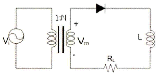
- RL
- N
- Vi
- Vm
(정답률: 78%)

2. 다음 그림의 회로에서 근사적으로 베이스전압 VB를 구하기 위한 부분적인 바이어스 회로이다. VB의 값을 구하면?
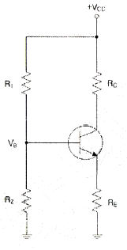
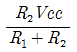
- R2Vcc
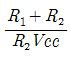
- R1Vcc
(정답률: 76%)
3. 부궤환 증폭기의 특징에 대한 설명으로 틀린 것은?
- 주파수 대역폭이 증대 된다.
- 이득이 증가한다.
- 주파수 일그러짐이 감소된다.
- 안정도가 향상된다.
(정답률: 56%)
4. 다음 하틀리 발진회로에서 캐패시턴스 C=200[pF], 인덕턴스 L1=180[μH], L2=20[μH]이며, 상호인덕턴스 M=90[μH]의 값을 가질 때 발진주파수는 약 얼마인가?
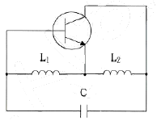
- 517[kHz]
- 537[kHz]
- 557[kHz]
- 577[kHz]
(정답률: 69%)
5. 인가되는 역전압의 직류전압에 의해 캐피시턴스가 가변되는 소자를 이용하여 발진주파수를 가변하는 발진회로는?
- 윈-브리지 발진회로
- 위상천이 발진회로
- 전압제어 발진회로
- 비안정멀티바이브레이터
(정답률: 59%)
6. 다음 중 증폭기의 종류에 해당하지 않는 것은?
- A급 증폭기
- AB급 증폭기
- C급 증폭기
- AC급 증폭기
(정답률: 83%)
7. 진폭변조에서 80[%] 변조하였을 때 상측파대의 전력은 반송파 전력의 몇 [%]인가?
- 16[%]
- 32[%]
- 40[%]
- 48[%]
(정답률: 47%)
8. 슈미트 트리거 회로의 출력 파형은?
- 방형파
- 정현파
- 삼각파
- 램프파
(정답률: 62%)
9. 다음 중 드모르간 법칙에 해당하는 것은?
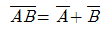
- AB=BA
- A(B+C)=AB+AC
- A(A+B)=A
(정답률: 83%)
10. 347(10)을 BCD(Binary Coded Decimal) 코드로 표시하면?
- 0011 0100 0111
- 0001 0101 0010
- 1010 1010 0110
- 0110 1101 1000
(정답률: 86%)
11. 다음 회로가 수행할 수 있는 논리 기능은?
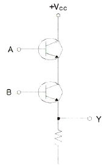
- NOT
- OR
- AND
- XOR
(정답률: 72%)
12. 다음 중 멀티플렉서(multiplexer)의 설명으로 잘못된 것은?
- 멀티플렉서는 전환스위치(selector SW)의 기능을 갖는다.
- N개의 입력 데이터에서 1개 입력씩만 선택하여 단일 통로로 송신하는 것이다.
- 특정한 입력을 몇 개의 코드화된 신호의 조합으로 바꾼다.
- 4×1 멀티플렉서의 경우에는 2개의 선택신호가 필요하다.
(정답률: 57%)
13. n개의 입력으로부터 2진 정보를 2n개의 독자적인 출력으로 변환이 가능한 것은?
- 멀티플렉서
- 디코더
- 계수기
- 비교기
(정답률: 80%)
14. 어떤 정류회로의 맥동률이 1[%]인 정류회로의 출력 직류전압이 400[V]일 때, 이 회로의 리플 전압은 얼마인가?
- 4[V]
- 40[V]
- 20[V]
- 2[V]
(정답률: 82%)
15. 다음 회로에서 R의 용도로 가장 적합한 것은?
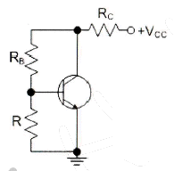
- 전류 부궤환 된다.
- 교류 이득이 증가한다.
- 동작점이 안정화 된다.
- 신호 이득을 방지한다.
(정답률: 63%)
16. 구형파를 발생시키는 발진기는 무엇인가?
- 수정발진기
- 멀티바이브레이터
- 플레이트동조발진기
- 다이네트론발진기
(정답률: 79%)
17. 다음은 디멀티플렉서 회로의 일부분이다. 점선 안에 공통으로 들어갈 게이트는? (단, S0, S1은 선택신호이고 I는 데이터 입력이다.)
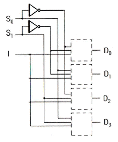
- OR 게이트
- AND 게이트
- XOR 게이트
- NOT 게이트
(정답률: 71%)
18. 다음 중 반가산기의 구성요소로 알맞은 것은?
- 배타적 OR(XOR) 게이트와 AND 게이트
- JK 플립플롭
- 2개의 OR 게이트
- RS 플립플롭과 D 플립플롭
(정답률: 82%)
19. 평활회로의 기능에 대해 바르게 설명한 것은?
- 콘덴서나 인덕터를 통해 파형을 평탄하게 하여 일정한 크기의 전압을 만든다.
- 트랜지스터를 통해 (-)성분을 제거시켜서 평균값을 발생시킨다.
- 제너다이오드를 통해 출력전압을 안정화시켜준다.
- 트랜지스터를 통해 출력전압을 안정화시켜준다.
(정답률: 73%)
20. 다음은 달링턴 회로에서 직류 바이어스 전류 IE를 계산하면 약 얼마인가? (단, IB=2.56[μA], β1=100, β2=100이다.)
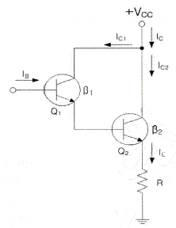
- 2.61[mA]
- 26.1[mA]
- 261[mA]
- 2.61[A]
(정답률: 59%)
2과목: 정보통신 시스템
21. 다중 접근 제어 방식 중 경쟁 방식(Contention)과 거리가 먼 것은?
- ALOHA
- CSMA/CD
- CSMA/CA
- Polling
(정답률: 75%)
22. 10개의 지국을 그물형(Mesh)으로 연결하려 할 때 소요되는 최소 링크수는?
- 25
- 35
- 45
- 55
(정답률: 91%)
23. 다음 중 교환 통신망의 분류로 적절하지 못한 것은?
- 패킷교환망
- 회선교환망
- 메시지교환망
- 음성교환망
(정답률: 75%)
24. 발신지로부터 목적지로 패킷을 절달하는 기능을 수행하는 OSI 7계층은?
- 물리계층
- 데이터링크계층
- 네트워크계층
- 전송계층
(정답률: 74%)
25. 정보를 송수신할 수 있는 능력을 가진 개체로써, 주어진 입력에 대하여 어떤 기능을 수행하고 출력하는 것은?
- 데이터(Data)
- 엔티티(Entity)
- 프로토콜(Protocol)
- 스테이트(State)
(정답률: 87%)
26. 국제 표준화 기구 중 정보통신 기술 분야의 표준화를 목적으로 한 국제 표준화 기구는?
- ITU(International Telecommunication Unit)
- ISO(International Organization for standardization)
- IEEE(Institute of Electrical and Electronics Engineers)
- TTA(Telecommunication Technology Association)
(정답률: 82%)
27. 프로토콜의 주요 요소 중에서 데이터 전송시기와 전송속도에 관한 특성을 나타내는 것은?
- 타이밍
- 구문
- 의미
- 표준
(정답률: 89%)
28. OSI 7계층 중 시스템간의 전송로 상에서 순서제어, 오류제어, 회복처리, 흐름제어 등의 기능을 실행하는 계층은?
- 물리 계층
- 트랜스포트 계층
- 데이터링크 계층
- 세션 계층
(정답률: 67%)
29. 회선 교환방식과 비교하여 ATM 교환방식의 장점이 아닌 것은?
- 다양한 종류의 트래픽을 통합화할 수 있다.
- 회선의 독점 사용으로 전송의 효율성을 높일 수 있다.
- 다양한 대역폭을 갖는 서비스를 처리할 수 있다.
- 망자원이 비어 있을 시에 어느 서비스라도 망자원을 사용할 수 있다.
(정답률: 59%)
30. 고속의 무선 및 멀티미디어 통신을 위해 하나의 정보를 여러 개의 반송파로 분할하고 분할된 반송파 사이의 주파수 간격을 최소화하기 위해 직교 다중화해서 전송하는 통신 기술은 무엇인가?
- THSS
- FHSS
- DSSS
- OFDM
(정답률: 91%)
31. 무선 LAN에 대한 설명으로 잘못된 것은?
- 무선 LAN은 목적지 주소와 위치가 동일하지 않다.
- 무선 매체는 설계에 영향을 준다.
- 무선 주파수 자원은 무한하다.
- 단말기가 이동한다.
(정답률: 77%)
32. 혼잡한 네트워크 상에서 전송량을 분리하는데 사용하는 장치는?
- 리피터
- 브리지
- 허브
- 라우터
(정답률: 56%)
33. 무선 인터넷에서 사용하는 Markup 언어에 관한 설명 중 틀린 것은?
- 무선 인터넷 사이트 구축에 위한 언어는 HDML(Handheld Device Markup language)이다.
- mHTML(Microsoft HTML)은 마이크로소프트에서 무선 인터넷을 위해 기존의 HTML의 많은 기능을 삭제한 경량급 언어이다.
- XML(eXtensible Markup Language)는 WAP 포럼에서 정의한 HTML과 유사한 작은 크기의 Markup 언어이다.
- xHTML(eXtensible HTML)은 인터넷 표준 제정 단체인 W3C가 발표한 표준안으로 XML 표준을 따르는 HTML과 호환되도록 짜여진 언어이다.
(정답률: 72%)
34. 다음 교환기 중 국내에서 개발된 전전자교환기는?
- NO.5 ESS
- S1240
- AXE-10
- TDX-10
(정답률: 76%)
35. 인터네트워킹을 구축할 때 요구되는 사항이 아닌 것은?
- 네트워크 간의 링크를 제공하며 최소한 물리적 계층과 링크의 제어 연결이 요구된다.
- 상이한 네트워크들 상의 프로세스들 사이에 데이터의 경로 배정과 전달에 관한 모든 것을 제공하여야 한다.
- 여러 종류의 네트워크들과 게이트웨이의 사용에 대한 트랙을 보존하며 상태정보를 유지하고 요금계산 서비스를 제공하여야 한다.
- 다양한 서비스를 위해 임의 구성된 네트워크 구조 자체를 자유롭게 변형할 수 있어야 한다.
(정답률: 78%)
36. 다음 중 센서 네트워크를 이용하여 유비쿼터스 환경을 구현하는 것을 목적으로 하는 것은?
- USN
- BCN
- TMN
- VAN
(정답률: 86%)
37. 네트워크관리시스템(NMS) 운용 중 현장 Access 설비로부터 1분당 평균 20개의 패킷이 전송되어 오고 있다. 이 스테이션에서의 처리 시간이 1패킷당 평균 2초라 할 때 시스템의 이용율은?
- 1/3
- 2/3
- 1/6
- 5/6
(정답률: 91%)
38. 우리나라가 독자 개발한 대칭키 암호화 기술 중 국제 표준으로 채택된 기술은 무엇인가?
- SEED
- RSA
- DES
- RC4
(정답률: 87%)
39. 정보통신 시스템을 실제로 만들어내는 과정은?
- 시스템 설계과정
- 시스템 계획과정
- 시스템 구현과정
- 시스템 운용지원과정
(정답률: 87%)
40. TMN(Telecommunication management Nerwork)에서 정의하고 있는 5가지 관리 기능에 해당하지 않는 것은?
- 성능관리
- 보안관리
- 조직관리
- 구성관리
(정답률: 86%)
3과목: 정보통신 기기
41. 다음 중 정보통신시스템의 구성요소가 아닌 것은?
- 통신회선
- 통신제어장치
- 중앙처리장치
- 전송통제기
(정답률: 59%)
42. 다음 중 범용단말장치가 아닌 것은?
- POS(Point of Sale)
- OMR(Optical Mark Reader)
- MICR(Magnetic Ink Character Reader)
- CRT(Cathode Ray Tube)
(정답률: 76%)
43. 어떤 펄스의 펄스시간이 1,000×10-6[sec]일 때, 이 펄스의 변조속도[baud]는?
- 1[baud]
- 10[baud]
- 100[baud]
- 1,000[baud]
(정답률: 86%)
44. xDSL에서 사용되는 변조방식인 DMT의 장점이 아닌 것은?
- 회선상태에 따라 다양한 속도를 지원한다.
- 주파수를 독립적으로 운용하여 초기 모뎀간의 각 구간마다 전송파워의 범위를 정할 수 있다.
- 회선의 잡음이 특정대역에 영향을 줄 경우에는 그 대역에서 통신이 가능한 QAM 크기를 적용하여 최대의 통신속도 제공이 가능하다.
- 초기 모뎀간의 설정시간이 짧고 오류 검사가 간편하다.
(정답률: 77%)
45. 다음 중 공동이용기의 설명으로 맞는 것은?
- 폴링 방식으로 네트워크를 제어하는 경우 통신 회선을 공동을 이용하여 네트워크의 단순화와 비용을 절감할 수 있는 장치
- 여러 개의 단말장치들이 하나의 통신회선을 통하여 데이터를 전송하고, 수신측에서도 여러 개의 단말장치들의 신호로 분리하여 입출력할 수 있도록 하는 장치
- 전송회선의 데이터 전송 시간을 타임 슬롯(Time Slot)이라는 일정한 시간 폭으로 나누고, 이들을 일정한 크기의 프레임으로 묶어서 채널별로 특정시간대에 해당하는 슬롯에 배정하는 방식
- 실제로 전송할 데이터가 있는 단말장치에만 동적인 방식으로 각 부채널에 시간폭을 할당하는 장치
(정답률: 68%)
46. 다음 중 모뎀의 궤환시험(Loop Back Test) 기능과 관련된 것이 아닌 것은?
- 모뎀의 패턴발생기와 내부회로의 진단테스터
- 자국내 모뎀의 진단 및 통신회선의 고장의 진단
- 전송속도의 향상
- 상대편 모뎀의 시험인 Remote Loop Back Test도 가능
(정답률: 79%)
47. 다음 중 다중화 방식의 FDM 방식에서 서브 채널간의 상호 간섭을 방지하기 위한 완충 역할을 하는 것은?
- Buffer
- Guard Band
- Channel
- Terminal
(정답률: 91%)
48. 다음 중 팩시밀리(Facsimile) 통신 방식인 G4 FAX에 대한 설명이 아닌 것은?
- Modified Huffman과 Modified Read 방식을 채용하여 데이터를 압축하는 기술을 사용하는 기종이다.
- A4 표준 원고를 전송하는데 약 3초 정도 소요된다.
- 광범위한 서비스와 다기능 문서 통신을 구현할 수 있다.
- 디지털망 접속용 Digital 팩시밀리이다.
(정답률: 81%)
49. 사무실에서 인터넷 구내 망을 설치하여 음성전화 서비스를 제공하는 설비는?
- PBX
- IP-PBX
- ISDN-PBX
- Solo-PBX
(정답률: 83%)
50. CATV 시스템의 설명으로 옳지 않은 것은?
- 유선방송 시스템은 공동수신 CATV, 지역외 CATV, 자체방송 CATV, 쌍방향 CATV로 구분
- 국소적인 분야에서 특수한 목적으로 사용하는 경우 간단한 카메라와 모니터링 화면 및 화상정보의 전송로 전달과 통제실 확인장치 및 컴퓨터 시스템으로 구성
- CATV의 3요소는 전체 시스템을 통제하는 유선국, 신호를 분배 전송하는 분배 전송로, 서비스를 받는 가입자국으로 구성
- 유선방송 시스템의 응용으로는 호텔용 CATV, 교통감시용 CATV, 교육용 CATV, 정지화상통신, TV 회의, TV 전화 등
(정답률: 79%)
51. 다음의 내용에 가장 적합한 것은?
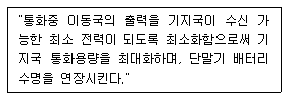
- 폐루프 전력제어
- 순방향 전력제어
- 개방루프 전력제어
- 외부루프 전력제어
(정답률: 79%)
52. 다음 중 전리층에 대한 설명으로 옳은 것은?
- 전리층은 D층, E층, F층 및 G층으로 구분된다.
- D층은 다른 층에 비하여 전자밀도가 높다.
- E층은 주간에 중단파를 반사시키지 못한다.
- 마이크로파는 전리층을 통과할 수 있다.
(정답률: 74%)
53. 다음 안테나 중 위성통신용 안테나로 주로 사용되고, 주반사기의 초점과 부반사기의 허초점을 일치시킨 형태의 안테나는?
- 롬빅 안테나
- 파라볼릭 안테나
- 카세그레인 안테나
- 혼 리플렉터 안테나
(정답률: 81%)
54. 다음 중 데이터버스트(burst)를 송신하고자 할 때 사전에 시간대역의 사용을 요구하여, 지정된 시간대역으로 버스트를 송신하는 방식은 어느 것인가?
- A-ALOHA
- P-ALOHA
- S-ALOHA
- R-ALOHA
(정답률: 77%)
55. AM 수신기의 기본 구성부에 해당하지 않는 것은?
- 고조파 증포부
- 국부 발진기
- 주파수 혼합부
- 주파수 체배기
(정답률: 68%)
56. 위성통신에서 지구국 장비의 기본 구성에 해당하지 않는 것은?
- 안테나계
- 송신계
- 수신계
- 추진계
(정답률: 87%)
57. 텔레텍스의 특징이 아닌 것은?
- 메모리로 전송하고 자동 수신이 가능하다.
- 혼합모드를 이용, 도표 등 이미지 정보를 포함하는 문장을 전송한다.
- 부호화를 통한 문자 전송으로 단시간 전송이 가능하다.
- 초당 30프레임의 영상 신호를 변환하여 재생한다.
(정답률: 60%)
58. 가입자망 기술로 망의 접속계 구조 형태인 PON 기술에 대한 특징이 잘못 설명된 것은?점 2층
- 네트워크 양끝 단말을 제외하고는 능동소자를 전혀 사용하지 않는다.
- 광섬유의 효율적인 사용을 통하여 광전송로의 비용을 절감한다.
- 유지보수 비용이 타 방식에 비해 저렴하다.
- 보안성이 우수하다.
(정답률: 73%)
59. 다음 중 지능형 교통시스템에서 통행료 자동지불 시스템, 주장장관리, 물류 배송관리, 주유소 요금 지불 등에 활용되는 단거리 무선통신은?
- DSRC
- GPS
- WiBro
- LAN
(정답률: 84%)
60. 다음 중 단순한 전송 기능 이상으로 정보의 축적, 가공, 변환 처리 등의 부가가치를 부여한 음성 또는 데이터 정보를 제공해 주는 복합적인 정보 서비스망은?
- DSU
- VAN
- LAN
- MHS
(정답률: 85%)
4과목: 정보전송 공학
61. 5[kHz]의 음성신호를 재생시키기 위한 표본화 주기는?
- 225[μs]
- 200[μs]
- 125[μs]
- 100[μs]
(정답률: 79%)
62. 채널의 대역폭이 1,000[Hz]이고 신호대 잡음비가 3일 경우 채널용량은 얼마인가?
- 1,500[bit/sec]
- 2,000[bit/sec]
- 2,500[bit/sec]
- 3,000[bit/sec]
(정답률: 76%)
63. 다음 중 양자화 간격에 따른 분류에 해당하지 않는 것은?
- 선형양장화
- 비선형양자화
- 적응양자화
- 복합양자화
(정답률: 74%)
64. 다음 중 2원 전송 부호인 NRZ의 설명으로 틀린 것은?
- 0(Zero) 전압으로 돌아오지 않는다.
- RZ 부호에 비해 대역폭을 효율적으로 사용한다.
- 직류 성분이 존재한다.
- 1의 입력신호 펄스를 양 전압과 음 전압으로 교대로 처리한다.
(정답률: 58%)
65. 다음 중 양자화 스텝수가 6비트이면 양자화 계단수(M)는 얼마인가?
- 16
- 64
- 32
- 8
(정답률: 87%)
66. 다음 중 상호변조왜곡 방지 대책으로 가장 적합한 것은?
- 입력 신호의 레벨을 높인다.
- 전송시스템에 FDM 방식을 사용한다.
- 송수신 장치를 선형영역에서 동작시킨다.
- 필터를 이용하여 통과대역 내의 신호를 걸러낸다.
(정답률: 57%)
67. 전송로의 정적인 분완전성은 시스템의 특성에 의해 발생되는 왜곡인데 이와 관계가 없는 것은?
- 진폭 감쇠 왜곡
- 지연 왜곡
- 특성 왜곡
- 대칭 왜곡
(정답률: 72%)
68. 다음 중 전파통신이 가능한 가시거리(Line-of-Sight)를 구하는 공식은? (단, d : 가시거리, K : 지구 곡률에 의한 보정계수, H : 안테나 높이)
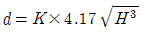
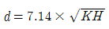
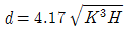
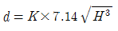
(정답률: 78%)
69. UTP 케이블의 카테고리(Category)라 함은 표준화 기구에서 정의한 케이블 회선의 꼬임 정도 등을 나타내는 인터페이스 규격이다. 다음 중 대부분 Unshielded 형태로 제작되며, 최대 100[MHz]의 전송대역까지 통신 가능한 미국표준(EIA-568) 규격은?
- Category5 또는 5e
- Category6
- Category6A
- Category7
(정답률: 89%)
70. 100[mV]는 몇 [dBmV]인가? (단, 1[mV]는 0[dBmV[이다.)
- 10[dBmV]
- 20[dBmV]
- 30[dBmV]
- 40[dBmV]
(정답률: 72%)
71. 다음 전송방식 중 2선식 전송로를 이용하여 양방향 신호 전송이 가능하지만 동시에 양방향 전송이 불가능한 통신방식은?
- Simplex
- Half-Duplex
- Full-Duplex
- One-way
(정답률: 86%)
72. 플래그 동기방식에서 비트스터핑(Bit Stuffing)을 행하는 목적은?
- 프레임의 구분
- 데이터의 투명성 보장
- 정보부 암호화
- 데이터 변환
(정답률: 76%)
73. 신호방식 중 R2 신호방식과 NO.7 신호방식의 비교 설명으로 맞지 아니한 것은?
- 호 접속시간이 R2 방식보다 느리다.
- 음성에 대한 간섭이 상대적으로 작다.
- 링크 또는 노드의 파손시 재부팅이 쉽다.
- 다양한 망 서비스 제공이 가능하고 유지보수가 용이하다.
(정답률: 64%)
74. HDLC 프로토콜에서 사용되는 프레임 내에 제어부를 구성하는 비트들은 사용목적에 따라 3가지의 구성형식을 가지게 되는데 이에 해당되지 않는 것은?
- 감시형식(S-frame)
- 비번호제형식(U-frame)
- 응답형식(R-frame)
- 정보전송형식(I-frame)
(정답률: 76%)
75. 디지털 통신망에서 발생하는 Slip에 대한 설명으로 틀린 것은?
- 일종의 버퍼인 ES의 오버플로우나 언더플로우에 의한 데이터 손실을 Slip이라고 한다.
- Slip이 제어되지 않으면 프레임 동기 손실을 유발한다.
- 1프레임 단위로 발생하는 Slip을 Controlled Slip이라 한다.
- Slip을 방지하는 방법으로 SSB방법을 사용한다.
(정답률: 77%)
76. 네트워크 계층의 핵심적인 프로토콜로 상위계층으로부터 메시지를 받아 이를 패킷현태로 전송하는 프로토콜은?
- IP(Internet Protocol)
- UDP(User Datagram Protocol)
- ICMP(Internet Control message Protocol)
- ARP(Address Resolution Protocol)
(정답률: 68%)
77. 전송제어 프로토콜 중 BASIC 프로토콜의 전송제어 문자 내용이 틀린 것은?
- SYN: 헤딩의 시작
- STX: 헤딩의 종료 및 TEXT의 개시
- EOT: 전송의 끝 및 데이터링크의 초기화
- ACK: 수신한 정보 메시지에 대한 긍정응답
(정답률: 71%)
78. 데이터링크 계층의 기능에 과한 내용으로 틀린 것은?
- 인접노드간의 흐름제어와 에러제어 기능을 수행한다.
- 매체공유를 위한 매체접근제어(MAC)를 수행한다.
- 발진지에서 목적지까지 최적의 패킷 전송경로를 설정한다.
- 프레임을 노드에서 노드로 전달한다.
(정답률: 63%)
79. 데이터링크 계층(Data link Layer)에서 데이터가 전송되는 형태는 어떤 것인가?
- 비트(bit)
- 패킷(packet)
- 프레임(Frame)
- 데이터그램(Datagram)
(정답률: 76%)
80. 네트워크 노드 사이에서의 신뢰성 있고 효율적인 정보의 전달에 목적을 둔 프로토콜은?
- 네트워크 액세스 프로토콜
- 네트워크 내부 프로토콜
- 응용 지향 프로토콜
- 네트워크간 프로토콜
(정답률: 71%)
5과목: 전자계산기일반 및 정보통신설비기준
81. 다음 중 RISC의 특징이 아닌 것은?
- 고정된 길이의 명령어 형식으로 디코딩이간단하다.
- 단일 사이클의 명령어 실행
- 마이크로 프로그램된 제어보다는 하드와이어된 제어를 채택한다.
- CISC보다 다양한 어드레싱 모드
(정답률: 68%)
82. 부동 소수점 표현의 수들 사이에서 곱셈 알고리즘 과정에 해당하지 않는 것은?
- 0(zero)인지의 여부를 조사한다.
- 가수의 위치를 조정한다.
- 가수를 곱한다.
- 결과를 정규화한다.
(정답률: 78%)
83. 다음 문장의 결과 값은?
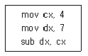
- 3
- 4
- 5
- 2
(정답률: 90%)
84. 16비트 명령어 형식에서 연산코드 5비트, 오퍼랜드1은 3비트, 오퍼랜드2는 8비트일 경우, ⓐ 연산종류와 사용할 수 있는 ⓑ 레지스터의 수를 바르게 나열한 것은?
- ⓐ 32가지, ⓑ 512
- ⓐ 31가지, ⓑ 8
- ⓐ 32가지, ⓑ 8
- ⓐ 8가지, ⓑ 511
(정답률: 75%)
85. 다음 중앙처리장치의 명령어 싸이클 중 (가)에 알맞은 것은?
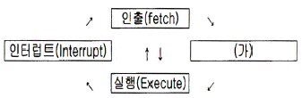
- Instruction
- Indirect
- Counter
- Control
(정답률: 67%)
86. 상대 주소지정(relative addressing)에서 사용하는 레지스터는 무엇인가?
- 일반 레지스터(general register)
- 색인 레지스터(index register)
- 프로그램 계수기(program counter)
- 메모리 주소 레지스터(memory address register)
(정답률: 50%)
87. 다음 중 10진수 56789에 대한 BCD(Binary Coded Decimal)는 어느 것인가?
- 0101 0110 0111 1000 1001
- 0011 0110 0111 1000 1001
- 0111 0110 0111 1000 1001
- 1001 0110 0111 1000 1001
(정답률: 85%)
88. 다음 지문이 의미하는 소프트웨어는 무엇인가?
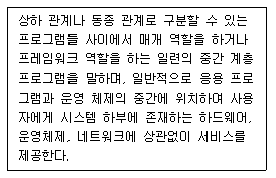
- 유틸리티
- 디바이스 드라이버
- 응용소프트웨어
- 미들웨어
(정답률: 82%)
89. 다음 중 16비트 마이크로프로세서에 속하지 않은 것은?
- 인텔(Intel) 8088
- Zilog Z-8000
- Motorola 68020
- 인텔(Intel) 80286
(정답률: 70%)
90. 다음 중 마이크로 명령어에 대한 설명으로 틀린 것은?
- OP코드와 오퍼랜드로 구분한다.
- 오퍼랜드에는 주소, 데이터 등이 저장된다.
- 오퍼랜드는 오직 한 개의 주소만 존재한다.
- 컴퓨터 기계어 명령을 실행하기 위해 수행되는 낮은 수준의 명령어이다.
(정답률: 73%)
91. 방송통신재난에 대비하기 위하여 수립하여야 하는 방송통신재난관리기본계획에 포함되어야 하는 사항으로 볼 수 없는 것은?
- 우회 방송통신 경로의 확보
- 방송통신회선설비의 연계 운용을 위한 정보체계의 구성
- 피해복구 물자의 확보
- 통신재난을 입은 전기통신설비의 매수
(정답률: 78%)
92. 정보통신공사업을 등록한 자는 등록기준에 관한 사항을 몇 년 이내의 범위에서 대통령령이 정하는 기간 경과시 시ㆍ도지사에게 신고하여야 하는가?
- 1년
- 2년
- 3년
- 5년
(정답률: 49%)
93. 유선, 무선, 광선 또는 그 밖의 전자적 방식으로 부호, 문언, 음향 또는 영상을 송신하거나 수신하는 것을 무엇이라 하는가?
- 정보통신
- 전기통신
- 전자통신
- 무선통신
(정답률: 66%)
94. 기간통신사업자가 언론매체, 인터넷 또는 홍보매체 등을 활용하여 공개하여야 할 통신규약의 종류와 범위는 누가 정하여 고시하는가?(관련 규정 개정전 문제로 기존 정답은 2번입니다. 여기서는2번을 누르면 정답처리됩니다. 자세한 내용은 해설을 참고하세요.)
- 방송통신심의위원장
- 방송통신위원장
- 한국정보통신기술협회장
- 한국산업표준원장
(정답률: 79%)
95. 수급인의 정의로 가장 적합한 것은?
- 도급인으로부터 공사를 하도급받은 공사업자를 말한다.
- 하청인으로부터 공사를 도급받은 공사업자를 말한다.
- 발주자로부터 공사를 하도급받은 공사업자를 말한다.
- 발주자로부터 공사를 도급받은 공사업자를 말한다.
(정답률: 67%)
96. 발주자는 누구에게 공사의 감리를 발주하여야 하는가?
- 감리원
- 정보통신기술자
- 용역업자
- 도급업자
(정답률: 78%)
97. 다음 중 전기통신사업의 정의에 대한 설명으로 가장 적합한 것은?
- 전기통신설비를 공사하는 사업
- 전기통신역무를 제공하는 사업
- 전기통신기자재를 생산하는 사업
- 전기통신기술을 교육하는 사업
(정답률: 75%)
98. 방송통신재난을 신속히 수습ㆍ복구하기 위한 방송통신재난관리 기본계획을 수립하는 속은?
- 한국통신(KT)
- 방송통신위원회
- 소방방재청
- 행정안정부
(정답률: 79%)
99. 다음 중 전송설비 및 선로설비의 보호대책과 관계가 없는 것은?
- 전송설비와 선로설비간의 분계점을 명확히 한다.
- 다른 사람이 설치한 설비에 피해를 받지 않도록 한다.
- 설비 주위에 설비에 관한 안전표지를 한다.
- 강전류전선에 대한 보호망이나 보호선을 설치한다.
(정답률: 72%)
100. 다음 통신설비의 비상사태 대응에 대한 설명 중 틀린 것은?
- 중요한 통신설비의 장애 발생시 통신설비 폐쇄방안 강구
- 임시통신설비 배치 및 임시통신회선 설정 등 대책 강구
- 연락체계 및 권한의 범위 등 비상사태 시의 체제 확립
- 복구대책의 실시방법 및 순서 등 복구대책 수립 가
(정답률: 81%)